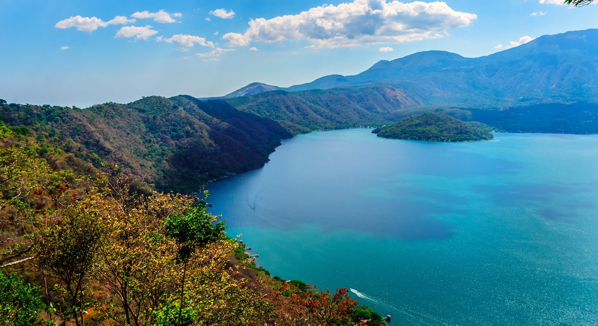

Lugares que puedes visitar en tu viaje
El Salvador es un lugar hermoso. Aquí se presentan algunos lugares turísticos que puedes visitar en tu próximo viaje.
Si estás en busca de donde hacer tu primera parada, la ciudad capital, es una opción muy buena. Con muchos hoteles, restaurantes y centros comerciales, el entretenimiento nunca se acaba.
Si la ciudad no es lo tuyo, hay naturaleza de sobra. Este lago, que antes era el cráter de un volcán, es ahora un destino turístico muy visitado.
¿Nunca has visto un volcán? Ahora tienes la oportunidad. Al llegar a su cumbre se dice que podrás ver una hermosa vista del Oceáno Pacífico.
Ubicada a 47 kilometros de San Salvador, la ciudad de Suchitoto es algo necesario para tu viaje. Con sus calles empedradas y coloridas fachadas, sería un recorrido muy único.